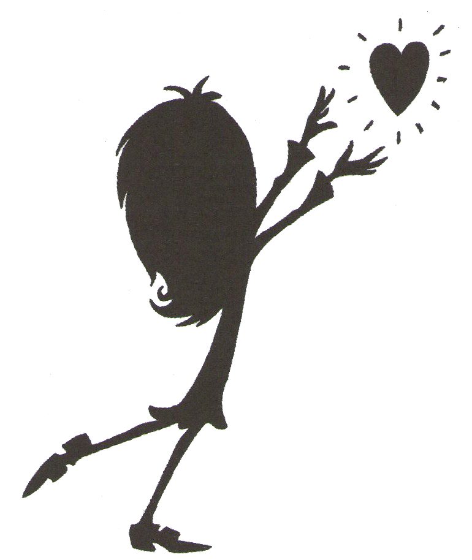
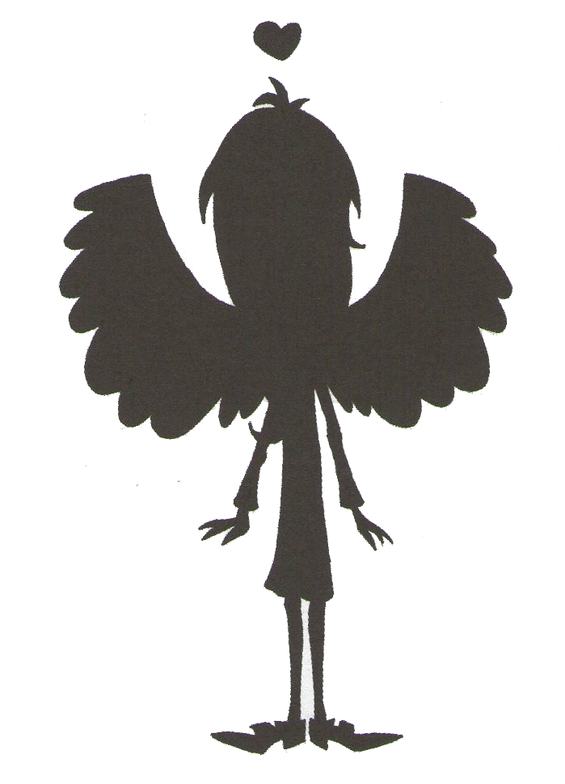
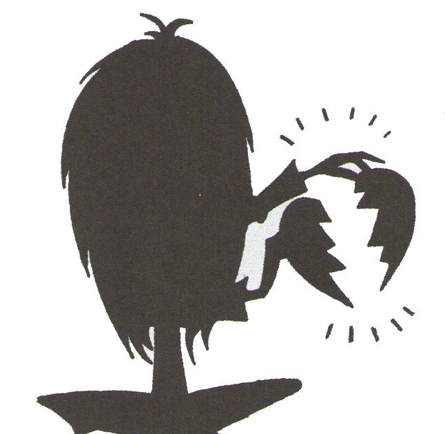

Biografía
Charlotte Usher, nuestra protagonista, era una chica que siempre pasaba desapercebida por todos en Hawthorne High. Aprende más sobre ella!
Ver

Libros
Conoce los títulos de los 5 libros que completan la saga Ghostgirl, las cuales cuentan las historias de Charlotte Usher desde el más allá!
Ver

Enlaces
Incluye enlaces a las fuentes de las cuales se ha obtenido la información, imagenes y recursos para el buen funcionamiento de la página.
Ver